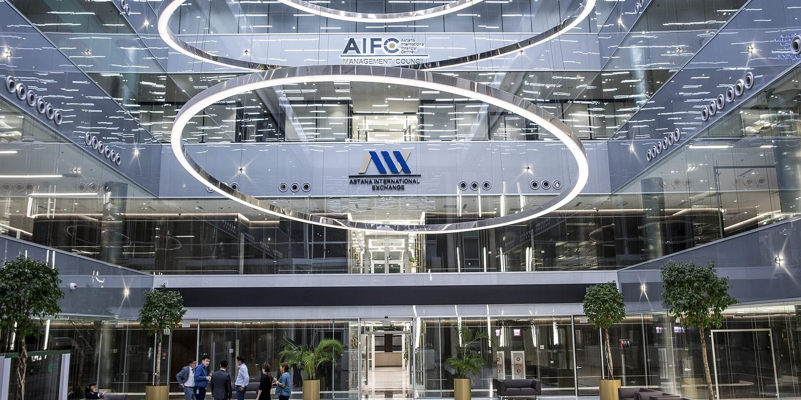
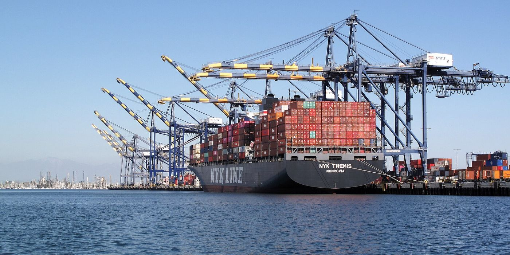

Finance from first principles
A short course for readers who are new to finance: how companies report, how markets value them, what banks, auditors and consultants do, and how money moves between countries. Every lesson uses real figures from the research on this site.
What finance is
The study and practice of moving money across time and between people: saving now to spend later, borrowing now and repaying later, and deciding which projects deserve money.
Finance has three main branches. Personal finance covers a household's income, savings, loans and insurance. Corporate finance covers how a company raises money, which projects it spends it on and how much it returns to its owners. Public finance covers taxes, government spending and government debt.
Between them sit financial markets and institutions: banks, stock exchanges, insurers and funds. Their job is to connect people who have spare money with people who can use it, and to price the risk of doing so. The price of money is the interest rate; the price of owning part of a company is its share price.


Check yourselfWho earns the interest a borrower pays?
Mostly the bank. It passes part of it to savers as interest on their deposits and keeps the difference as its income.
Reading a company's accounts
Listed companies publish three main statements, usually under International Financial Reporting Standards (IFRS) or, in the United States, US GAAP.
- Income statement: revenue, the costs of earning it, and what is left as profit over a period.
- Balance sheet: what the company owns (assets), what it owes (liabilities) and the difference, which belongs to shareholders (equity), at one date.
- Cash flow statement: the cash that actually came in and went out, from operations, investment and financing.
Profit and cash are not the same. A company can report a profit while its cash falls, for example when customers pay late or when it spends heavily on new equipment. That is why analysts read all three statements together.
Check yourselfA company reports a profit, but its cash falls. How can both be true?
Profit counts a sale when it is made; cash counts money when it arrives. Late-paying customers or heavy spending on equipment can lower cash while profit stays positive.
What a company is worth
The stock market puts a price on a company every trading day. Multiplying the share price by the number of shares gives its market value (market capitalisation). Ratios compare that value with what the company earns or owns.
A low P/E can mean a share is cheap, or that investors expect profit to fall. A high P/E can mean investors expect growth, or that the year's profit was unusually small. The ratio is a starting point for questions, not an answer. Every company note on this site ends with a table comparing these ratios for the seven companies covered.

_02.jpg){kind=link}
Check yourselfHalyk trades at 3.8 times profit and China Southern at 48.9. Is Halyk the better company?
Not on this evidence alone. Halyk's profit is high and may fall as margins shrink; China Southern's 2025 profit was unusually small after years of losses. The ratio tells you which questions to ask.
Banks and central banks
A commercial bank takes deposits and lends most of the money out at a higher rate. Its basic income is the difference between the two.
A central bank sets the short-term price of money. In Kazakhstan that is the National Bank's base rate, cut to 15.75% on 23 October 2026. When the central bank raises the rate, borrowing becomes dearer and inflation usually slows; when it cuts, the opposite. Central banks also set rules for banks, such as how much money they must hold in reserve, which is why a change in reserve requirements can reduce a bank's profit.


Check yourselfWhy can higher reserve requirements reduce a bank's margin?
More of the bank's money must sit at the central bank, where it earns little, so less of it can be lent out at higher rates.
Audit, consulting and investment banking
An independent check of a company's financial statements by outside accountants, who give an opinion on whether the statements present the company's position fairly under the reporting standards it uses.
The auditor does not prepare the accounts; management does. The auditor tests them and signs an opinion. An unmodified (clean) opinion means no material problems were found; a qualified opinion, an adverse opinion or a disclaimer signals increasingly serious problems. Most large listed companies are audited by one of the Big Four firms: Deloitte, PwC, EY and KPMG.
Paid advice to companies and governments on strategy, operations, technology or organisation.
Strategy consulting is dominated by McKinsey, Boston Consulting Group and Bain. Larger firms such as Accenture combine advice with building and running technology systems. Consultants are paid for projects or by the hour; their revenue depends on clients' budgets, which is why consulting firms' results are read as a signal of business confidence.
Helping companies raise money by issuing shares or bonds, and advising them on mergers and acquisitions.
When Air Astana listed its shares in London and Astana in 2024, banks organised the offering and found the investors. When a takeover is announced, investment banks usually advise both sides.


Check yourselfWho prepares a company's accounts: the auditor or management?
Management. The auditor tests the accounts and gives an opinion on them.
How global finance works
Money moves between countries for two reasons: to pay for trade, and to invest. A country that imports more goods than it exports runs a trade deficit, as Kazakhstan does with China; it pays for the difference with income from other trade or with money borrowed or invested from abroad.
Exchange rates set how much one currency buys of another. A weaker tenge makes Kazakh exports cheaper abroad but imports dearer at home, which is why the tenge appears in almost every company note on this site.
Several international institutions hold the system together. The International Monetary Fund lends to countries in balance-of-payments trouble and monitors their economies. The World Bank finances development projects. The Bank for International Settlements works with central banks and sets standards for bank capital. Countries with large savings often invest them through sovereign wealth funds, such as Kazakhstan's Samruk-Kazyna, which owns stakes in KazMunayGas, Kazatomprom and Air Astana.


Check yourselfIf the tenge weakens, what happens to the price of Chinese goods in Kazakhstan?
They become more expensive in tenge, which tends to reduce imports, while Kazakh exports become cheaper for foreign buyers.
Glossary
- Asset
- Something a company owns or controls that is expected to bring future benefit: cash, loans given, buildings, equipment.
- Audit
- An independent examination of financial statements by outside accountants, ending in a written opinion.
- Balance sheet
- A statement of assets, liabilities and equity at a single date.
- Base rate
- The central bank's main policy interest rate. In Kazakhstan it is set by the National Bank.
- Basis point
- One hundredth of a percentage point. A cut from 16.25% to 15.75% is 50 basis points.
- Bond
- A loan sold to investors as a security. The issuer pays interest (the coupon) and repays the amount at maturity.
- Book value
- Equity as shown on the balance sheet: assets minus liabilities.
- Cash flow
- The cash a business actually receives and pays out in a period.
- Consulting
- Paid advice to organisations on strategy, operations or technology.
- Cost of risk
- A bank's provisions for bad loans as a share of its average loan book.
- Depositary receipt (GDR)
- A certificate traded on a foreign exchange that represents shares of a company listed elsewhere.
- Dividend
- The part of profit a company pays out to its shareholders.
- Dividend yield
- The annual dividend per share divided by the share price.
- EBITDA
- Earnings before interest, taxes, depreciation and amortisation; a rough measure of operating profit before financing and asset costs.
- Equity
- The owners' share of a company: assets minus liabilities.
- Exchange rate
- The price of one currency in terms of another.
- Free cash flow
- Cash from operations minus capital spending; the cash left for debt repayment and dividends.
- Free float
- The share of a company's stock that is available for trading, excluding stakes held by controlling owners.
- IFRS
- International Financial Reporting Standards, the accounting rules used by listed companies in Kazakhstan and most countries outside the US.
- Income statement
- A statement of revenue, costs and profit over a period.
- Inflation
- The rate at which the general level of prices rises.
- IPO
- Initial public offering: the first sale of a company's shares to the public on a stock exchange.
- Liability
- An obligation to pay money or deliver something in future: deposits, loans received, bonds issued.
- Market value
- Share price multiplied by the number of shares; also called market capitalisation.
- Merger and acquisition (M&A)
- The purchase of one company by another, or the combination of two companies.
- Net income
- Profit after all costs, interest and tax; also called net profit.
- Net interest margin
- A bank's net interest income divided by its average interest-earning assets.
- Net margin
- Net income divided by revenue.
- P/B
- Price to book: market value divided by equity.
- P/E
- Price to earnings: market value divided by net income.
- Return on equity (ROE)
- Net income divided by average equity: how much profit the owners' money earns.
- Revenue
- Money earned from selling goods and services before costs are deducted.
- Sovereign wealth fund
- A state-owned fund that invests national savings, such as Samruk-Kazyna in Kazakhstan.
- Trade balance
- Exports minus imports. A negative figure is a trade deficit.